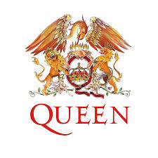

Queen
Banda británica de rock formada en 1970 en Londers.

Integrantes del grupo
Brian May
Fredy Mercury
John Deacon
Roger Taylor
Discografía
Grandes éxitos de Queen
año
disco
"A Kind of Magic" fue el álbum más exitoso.
1975
A Night at the Opera
1986
A Kind of Magic
1989
The Miracle
Sitio web oficial
www.queenonline.com/es
Para volver pinchar
aquí